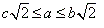
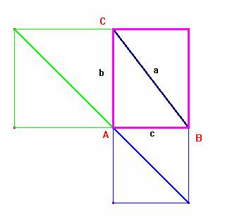

Demostrar sin palabras las siguientes desigualdades para un triángulo rectángulo :

SOLUCIÓN
Carmen Arriero Villacorta., profesora de matemáticas del IES Ramón y Cajal de Madrid, Asesora de Tecnologías de la Información y la Comunicación en el Centro de Apoyo al Profesorado de Hortaleza-Barajas de la Comunidad de Madrid (6 de junio de 2003).
